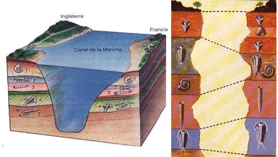
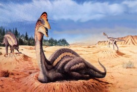
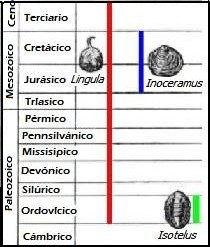

¿Qué esperaríamos encontrar en el mundo si hubiera ocurrido un diluvio?
Segunda edición. (Última actualización: 1 de noviembre de 1999)
Los cimientos del argumento creacionista yacen simplemente en el relato del Diluvio Bíblico como se narra en el libro del Génesis.
¿Por qué el Diluvio Bíblico es tan importante para el creacionismo?
Porque el registro fósil real apoya firmemente la evolución gradual de la vida con el pasar del tiempo, tal como ha sido descrito por la ciencia, y representa algunas de las evidencias más destructivas en contra del creacionismo (la idea de que todas las especies de organismos en la Tierra fueron creadas, completamente formadas, en un instante). Por consiguiente, es de crítica importancia para los creacionistas el ofrecer una explicación alterna para la presencia de los fósiles y la columna geológica. La historia de Noé y el Arca les da una oportunidad de justificar el desconcierto que les produce un registro fósil que documenta el aumento de la complejidad y diversidad de la a lo largo de los milenios, y la existencia de antiguas criaturas que ningún ojo humano ha visto jamás.
Mientras que la historia del diluvio bíblico se deriva con casi total seguridad de la temprana mitología del diluvio babilónico, los creacionistas modernos se mantienen en el error de creer que semejante evento es una certeza histórica. ¿Cuál es la evidencia para su conclusión? ¿Proporcionan evidencia geológica de que alguna vez, el planeta entero estuviera cubierto de agua en todas partes al mismo tiempo, hasta las cumbres más altas? No. Su única “evidencia” viene de la escritura bíblica:
“¡… la razón principal por la cual insistir en el Diluvio Universal como un hecho de la historia y como el vehículo primario para la interpretación geológica es que la Palabra de Dios lo enseña claramente! Ninguna dificultad geológica, real o imaginaria, puede permitírsele el tener precedencia sobre las claras afirmaciones y las deducciones necesarias de la Escritura.”
—Henry Morris, Biblical Cosmology and Modern Science (Cosmología Bíblica y Ciencia Moderna 1970 p.32-33, énfasis agregado)
Aunque esto está bien como creencia religiosa, esta declaración descalifica absolutamente al creacionismo como ciencia de cualquier tipo y lo ubica firmemente en el reino de la teología. Lo que Henry Morris (uno de los padres fundadores del movimiento creacionista) está diciendo es que si la evidencia física sugiere que los eventos ocurrieron diferente a como se narra en la Biblia cristiana, entonces la evidencia física debe rechazarse de antemano.
Se dice que: “Cuando la evidencia contradice la teoría, el científico rechaza la teoría. El teólogo rechaza la evidencia”. Con certeza, éste es el caso del creacionismo.
Una cita más que debería hacerlo sumamente escéptico frente a las afirmaciones creacionistas:
“Es precisamente porque la revelación bíblica tiene autoridad y perspicacia absolutas, que los hechos científicos, interpretados correctamente, darán el mismo testimonio que el de la Escritura. No hay la más remota posibilidad de que los “hechos” de la ciencia puedan contradecir a la Biblia.”
—Henry Morris en el primer párrafo de “Scientists Confront Creationism” editado por Laurie R. Godfrey (énfasis agregado)
En otras palabras, no se moleste cuestionando la Biblia, porque ella siempre tiene razón, punto final. Cuando la realidad choca con la Escritura, es la realidad la que está equivocada. Así es como los creacionistas salen en busca únicamente de lo que respalde su teología, mientras ignoran cada observación que la contradiga.
Un diluvio global habría sido un evento tan catastrófico que si de verdad, si realmente hubiese ocurrido, existirían rastros inequívocos de él. Debería de haber dejado pistas. ¿Cómo serían esas evidencias? ¿Qué esperaríamos encontrar? Los siguientes tópicos son un alista de evidencia física que los geólogos esperarían encontrar si el mundo hubiera estado cubierto, en un mismo tiempo, por una inundación global.
Ninguna de las siguientes condiciones se ha observado. Si los creacionistas de verdad estuvieran interesados en demostrar su punto de vista, y no simplemente en tratar de golpear a la evolución, se aventurarían al exterior buscarían ejemplos de estas condiciones. Imagínese eso. (¡De paso acabamos haciéndoles un gran favor al ofrecerles un listado de evidencia contundente que nos convencería!)
Lo que indica la siguiente información es que nunca ocurrió una inundación global, de extensión mundial. Ni una sola vez en la historia del mundo. Por lo tanto, las personas íntegras no deben continuar insistiendo que el capítulo del Génesis es una descripción literal de la historia. La ciencia lo ha refutado de forma absoluta. Esta página web es el clavo final el féretro de la “geología diluvial”. Continuar insistiendo que el Diluvio Universal fue una realidad histórica no sólo es inexacto, es fraudulento y deshonesto.
La versión original de esta lista fue compilada por primera vez por Jim Moore (usada con permiso)
Esperaríamos observar un manto mundial, uniforme, de cantos rodados dispuestos al azar, guijarros, cieno y arena reposando sobre una capa de arcilla. Esta capa debería estar sobre cualquier registro geológico pre-existente. El Diluvio, según se alega, tuvo lugar hace no más de 5000 años, por lo que esta evidencia debería permanecer aún con muy poca erosión. Pero este manto mundial no existe.
No esperaríamos encontrar ordenamiento en los sedimentos por tipo y tamaño. La vorágine de un diluvio sólo permitiría “amontonar” el sedimento transportado de acuerdo con la Ley de Stokes. Además, ¿CÓMO podrían hacer las aguas de una inundación para depositar las capas de sedimentos más PESADOS encima de las capas de los sedimentos más LIVIANOS? En otras palabras, si hubo un diluvio ultramasivo, no esperaríamos ver estratos de piedra caliza recubiertos por granito. Nunca, creacionista alguno ha explicado cómo el Diluvio podría haber depositado capas de sedimentos pesados encima de las capas de sedimentos más livianos.
Se esperaría que la superficie del suelo actual mostrara por todas partes el redondeo de las superficies de la tierra en la dirección en la cual retrocedió el agua. Habría megaondulaciones por todas partes, formadas por el movimiento rápido de las aguas alejándose de la superficie de la tierra tal como se ve a lo largo del Río Columbia. Se esperaría que las formas topográficas actuales mostrasen una segunda fase de erosión, resultante de este escurrimiento en la forma común de valles erosionados por debajo del nivel base de sus afluentes, que producen lo que se llama valles colgantes en un terreno glacial. Éstos serían comunes y no serían causados por glaciación.
No habría ninguna segregación de fósiles. Si todos los organismos vivieron al mismo tiempo, esperaríamos ver trilobites, braquiópodos, ammonites, dinosaurios, y mamíferos (incluyendo humanos) todos juntos mezclados al azar en la capa de extensión global descrita en el punto #1. Pero esto no es lo que se observa. El registro fósil exhibe un orden consistente con la teoría de evolución (pero incoherente con el creacionismo), desde las formas simples a las formas más complejas, y de criaturas muy diferentes a las especies modernas a otras que se hacen más estrechamente parecidas a las especies modernas. No hay un sólo caso de cualquier fósil que se halle depositado legítimamente “fuera de su lugar.”
(N. del T: Los fósiles marinos (en este caso) nos muestran que diferentes especies vivieron en diferentes momentos, razón por la cual los geólogos pueden correlacionar estratos de diferentes lugares. En la siguiente ilustración se muestran fósiles marinos tanto de Francia como de Inglaterra.)
Además de esto no habría eventos de extinción en el registro fósil. Hay, por lo menos, cinco eventos grandes de extinción, una situación en la cual los fósiles son abundantes debajo de una cierta línea entre las capas geológicas, pero quedan totalmente ausentes por encima de esa línea. El evento de la extinción más notable es el que mató a los dinosaurios (y el 90% de toda la otra vida) hace 65 millones de años. No hay ninguna manera de explicar estos rasgos geológicos con un diluvio global [2].
Si en algún lugar se hubieran preservado remanentes de la superficie terrestre prediluviana, su superficie mostraría enormes señales de erosión.
Si hubieran existido rocas ígneas (de origen volcánico) en los sedimentos del diluvio, tendrían todas la forma de lavas almohadilladas (pillow lava, en inglés) la cual sufre extrusión en el agua submarina. No podría haber ningún tipo de segregación de rocas ígneas. El basalto sería el único tipo de roca ígnea porque toda la actividad habría sido extrusiva [3]. Habría una ausencia completa de capas volcánicas entre los estratos.
En realidad, hay capas volcánicas muy claramente definidas, de las cuales se obtienen fechas radiométricas. ¿Cómo podríamos observar capas de roca volcánica entre los estratos si hubo un Diluvio en el momento? La lava se habría redondeado y tomado la forma de lo que se conoce como “lava almohadillada”, tal como se ve actualmente en el suelo oceánico. Así que ¿de qué manera podemos tener capas llanas de roca volcánica, comprimidas entre otras capas, mientras estaba ocurriendo una “inundación ultramasiva”?
Como las rocas metamórficas se forman de rocas previamente existentes, éstas no existirían en las capas geológicas postdiluviales, porque el calentamiento y enfriamiento necesario para grandes cuerpos requiere millones de años.
Todos los isótopos radiactivos que no se habrían desintegrado completamente después de unos 10,000 años existirían aún en la naturaleza, porque aquellos con una vida media moderadamente corta no habrían tenido tiempo para desintegrarse.
No deberían encontrarse varvas [1], ni núcleos de hielo (ice cores), conjuntos de anillos de árboles, arrecifes de coral, u otros ejemplos de acreción acumulada periódicamente, que se extendiera hacia atrás en el tiempo, más allá de la fecha del Diluvio. Sin embargo, se encuentran. Los núcleos de hielo taladrados en llanuras de hielos estables, 40,000 años de capas anuales. Las varvas, que son depósitos minerales, muestran millones de años de capas anuales.

Obtención de un núcleo de hielo o ice core.
-
Debido a la fuerza catastrófica del ambiente marino y la falta de exposición de la tierra durante el diluvio, no esperaríamos encontrar en el registro geológico ni un solo ejemplo de los siguientes fósiles delicados o de deposición de tierra:
Nidos fosilizados de dinosaurio.
Hormigueros.
Nidos de termitas.
Nidos de aves (de un pariente del flamenco en la Formación de Green River en Wyoming).
Avisperos frágiles.
Madrigueras complejas de roedores.
Estiércol animal en la posición original de deposición, con evidencia de haberse endurecido sobre tierra seca y sólida.
Huellas de animales terrestres.
Impresiones de gotas de lluvia.
Lodo seco resquebrajado y fosilizado (Mudcraks, en inglés).
Fosilización de muchas cosas frágiles, como plumas de aves (Confuciusornis)
Helechos (adyacentes a lechos de carbón)
Insectos (lechos lacustres del Oligoceno, cerca a Florrisant, Colorado),
Capas de rocas oxidadas (redbeds) ya que el oxígeno en el agua es insuficiente para oxidar el hierro presente.
Todas estas cosas frágiles se encuentran enterradas bien profundas en el registro geológico. Un diluvio catastrófico las habría destruido. Me gustaría que usted considerara cómo las impresiones de gotas de lluvia y el lodo resquebrajado podría haberse fosilizado en una inundación súbita y masiva.
Debido a la fuerza catastrófica del ambiente marino y la falta de exposición de la tierra durante el diluvio, no esperaríamos encontrar en el registro geológico, algún tipo de fósiles delicados que evidenciaran haber sido colocados sobre el suelo, como los nidos fosilizados de dinosaurios.
Si la tierra sólo tuviera unos 10,000 años de antigüedad, la aragonita metaestable (madreperla) sería común en los carbonatos y sobre todo, en los depósitos profundamente enterrados del Paleozoico (relativamente con alta presión). En realidad, las muestras más antiguas conocidas de aragonita son del Misisipiense (Una de las divisiones del Carbonífero). También esperaríamos encontrar vidrio volcánico y ópalo en rocas de todas “las edades,” incluso en rocas precámbricas que supuestamente habrían sido creadas durante la semana de la creación hace sólo 6,000 años. En realidad, el ópalo y el vidrio volcánico rara vez se encuentran, si alguna vez se han encontrado, en rocas Precenozoicas.
Esperaríamos encontrar foraminíferos y radiolarios del Mesozoico y del Cenozoico mezclados en los sedimentos Mesoatlánticos. Esto no ocurre.
No habría ningún afloramiento de esquistos azules (Blueschists). Los esquistos azules son rocas metamórficas, formadas a baja temperatura y alta presión que pueden contener restos de cojines de basalto e incluso fósiles. Estas rocas necesitarían de millones de años para ser subducidas desde la superficie a profundidades de cerca de 15-18 Km. Una vez enterradas profundamente, los minerales de los esquistos azules, como la glaucófana, necesitarían tiempo para crecer, puesto que las temperaturas son de sólo 300-400 C.
No esperaríamos encontrar ninguna evaporita espesa en el subsuelo (la halita o sal gema, la silvita, y el yeso). Sería imposible que precipitaran en un ambiente marino. (Las evaporitas son rocas sedimentarias formadas en marismas poco a nada comunicadas con el mar o en lagos salados donde por la evaporación del agua los cloruros y sulfatos alcalinos se precipitan. N. del T.)
Habría evidencia genética de un reciente cuello de botella en las poblaciones de todas las especies existentes. Pero no hay un cuello de botella genético fechado entre 6-10 mil años. (Un cuello de botella es un cambio aleatorio en las frecuencias de los alelos de una población como resultado de una reducción drástica del número de individuos; recuerde que la historia del diluvio requiere creer que sólo se salvaron una pareja, en unas especies y 6 animales en otras. N. del T.)
Habría alguna evidencia remanente de la(s) civilización(es) antediluviana(s) y obviamente de humanos antediluvianos. El Instituto para la Investigación de la Creación (ICR) no ha establecido ningún criterio de como podría ser un humano antediluviano (en lugar de designar a los fósiles como el Homo erectus y el Neandertal como “degenerados” postdiluvianos).
En el registro geológico, no se encontrarían ni hardgrounds que mostraran litificación (formación de roca sedimentaria a partir de sedimentos compactados) antes de la deposición de capas sucesivas, ni terrenos kársticos enterrados como se observan en la cima de las Calizas Redwall en el Gran Cañón. (Un hardground es un suelo duro, encostrado por óxidos de hierro y de manganeso, a veces acompañados de glauconita o fosfatos. Se observan hardgrounds en los sedimentos marinos, especialmente en el lecho de las series calcáreas, y se piensa que representan una detención en la sedimentación por la actividad de corrientes del fondo marino.)
(Proceso de formación de cavernas: Un tipo de modelado cárstico. Un “carst” es un macizo calcáreo, CaCO3, que ha sido disuelto por aguas cargadas de gas carbónico, H2O +CO2. La razón por la que no se esperaría encontrar ninguna estructura de origen cárstico en la columna geológica, como las estalactitas o estalagmitas, de haber ocurrido el diluvio, es porque su formación, por disolución de la roca caliza, requiere de miles de años. N. del T.)
No encontraríamos paleosuelos en el registro del diluvio porque no habría ni el tiempo, ni el mecanismo para que se formasen estando enterrados. (Los paleosuelos son suelos que se formaron antiguamente, en condiciones diferentes a las de nuestra época. Pueden haber sido cubiertos por sedimentos o ser todavía visibles en la superficie. Es realmente imposible que el diluvio halla podido formar los paleosuelos que se observan en la columna geológica. Por ejemplo los horizontes de suelo blanco de carbonato de calcio -llamados caliche- en Connecticut sólo se pueden formar en condiciones áridas o semiáridas, en las que las breves y fuertes lluvias disuelven el carbonato de calcio en las capas superiores del suelo y lo transportan hacia abajo, en la formación de este tipo de suelo se requiere que el agua se evapore rápidamente del suelo. Este tipo de suelo no puede formarse en las condiciones climáticas actuales de Connecticut, pero sí lo hizo en el pasado. Un diluvio Universal no los puede explicar. N. del T.)
Habría solamente una era desde la cima al fondo de la columna geológica. En otras palabras, si usted escogiera una piedra de la cima del Gran Cañón o del fondo, todas ellas deberían fecharse en 10,000 años de edad. No habría ninguna razón para encontrar una concordancia entre las capas de rocas y sus edades que están determinadas tanto estratigráfica como radiométricamente. Hay, de hecho, un aumento real de la edad a medida que uno va excavando más hondo en la columna. Si el diluvio hubiera ocurrido, entonces todo el estrato geológico se habría depositado en sólo un año, conteniendo todos esos molestos huesos. Por lo tanto, habría simplemente una misma era, desde el polvo de la superficie del suelo, hasta el fondo de las capas geológicas. Claramente éste no es el caso. Luego, el Diluvio Universal nunca ocurrió.
Todos los estratos inferiores, con millones de años de antigüedad, muestran un aumento de la complejidad y la diversidad de la vida en este planeta, que se fechan por lo menos hasta 3.800 millones de años atrás, cuando la única vida en la Tierra eran las bacterias. Esa evidencia respalda a la Evolución. Refuta la idea de que la tierra sólo tiene cerca de 10,000 años de antiguedad, y que toda la vida apareció súbitamente en una semana, totalmente formada en su estado actual. La columna geológica muestra claramente que los humanos sólo aparecieron muy recientemente en la historia de la tierra.
Deberíamos esperar que todas las cordilleras (al haber sido formadas durante o inmediatamente después del Diluvio) mostraran una cantidad igual o similar de erosión. Pero este no el caso.
Si el diluvio ocurrió hace cerca de 10,000 años sobre, los casquetes polares de hielo no deberían tener más de 5000 capas anuales. O, por lo menos, deberían de tener una gran evidencia de fusión e intrusión de agua salada en ese momento.
Si un diluvio hubiera ocurrido, todas las plantas vivas actualmente deberían tener semillas que podrían permanecer viables en condiciones calientes y húmedas durante un año, o qué pudieran sobrevivir sumergidas prolongadamente en agua de mar. Todas las plantas deberían poder crecer con poco o ningún mantillo de suelo. Pero, en realidad, la mayoría no puede.
Si un diluvio universal depositó todos los estratos, no esperaríamos encontrar estratos Precámbricos inclinados de 11,600-pies de espesor, en las series del precámbrico tardío del Gran Cañón, debajo de capas horizontales de 4,000-pies de espesor en la sección del Cámbrico-Pérmico en el Gran Cañón. Adicionalmente, si el diluvio depositó todos los estratos, ¡uno debería preguntarse en cuál de todos estos vivieron Adán y Noé! Los creacionistas nunca han identificado el lecho de roca sobre el que estos héroes bíblicos caminaron.
Con respecto a los fósiles, hay tres predicciones muy importantes que deberían cumplirse si el Diluvio Universal realmente hubiera ocurrido, y fuera el responsable de la deposición de fósiles en los estratos geológicos:
24.1. Ninguno de los fósiles marinos podría estar siendo engullido por otros fósiles, o mostrar señal alguna de haber sido consumidos por organismos carroñeros después de muertos.
24.2. Ninguno de los fósiles de vertebrados debería mostrar señas carroñeo o de descomposición prolongada por exposición en tierra.
24.3. Ninguno de los fósiles vertebrados debería estar cubierto por una costra de carbonato pedogénico (es decir de un nuevo suelo formado sobre ellos), como ocurre con los fósiles en Karoo de África del Sur y los Badlands de Dakota del Sur.
En otras palabras, si el Diluvio ocurrió, los vertebrados fósiles sólo deben consistir de huesos rotos y frescos que no exhiben señales de haber sido atacados por carroñeros o de haber quedado sobre el suelo o el fondo del mar por un largo periodo de tiempo.
La zoogeografía debería mostrar un modelo de dispersión que demostraría que el punto de origen de todas las especies está en el Medio Oriente (el punto donde desembarcó el Arca de Noé). Pero esto no es así. La zoogeografía muestra diferentes puntos de origen para las diferentes especies.
Las Islas de Hawai y las estructuras de coral asociadas deberían ser más recientes que el Diluvio. No lo son.
Debería haber isótopos con una vida media inferior a 80 millones de años en la biosfera. El hecho que no hay que ninguno de ellos respalda fuertemente la idea de una Tierra con una edad mucho mayor que 10,000 años. (Este punto no es importante para refutar el diluvio en particular, sino que presenta un argumento irrefutable a favor de una Tierra antigua.). Esta evidencia nunca ha sido refutada por creacionista alguno.
De igual forma, las plantas fosilizadas deben de presentarse a lo largo de todas las capas geológicas, sin ordenamiento de “primitivas” a “modernas”. Pero éste no es el caso. En la columna geológica aparece representada claramente una segregación de plantas fósiles que van desde las primitivas a las modernas. Las plantas no tienen ningún medio para “correr a las tierras más altas”, el método infantil que sugieren los creacionistas para explicar cómo los animales aparecen ordenados en la columna geológica de acuerdo con su inteligencia.
Los creacionistas quieren hacerle creer a la gente que todas las capas geológicas mostradas abajo fueron depositadas como resultado de una lluvia de 40 días…
¿Realmente cree usted que todo esto fue depositado después de una lluvia de 3 semanas?
Problemas adicionales con la “Geología Diluvial”
Con las contribuciones de Ed Babinski, Dave Matson, Ken Harding y otros
La “geología diluvial” posee todas las señales de una idea que no se ha meditado con la suficiente profundidad: sus implicaciones nunca han sido consideradas cuidadosamente por sus exponentes creacionistas. Por ejemplo, los conglomerados son un tipo de roca que parece un hormigón natural. Tiene una matriz de piedra arenisca u otras rocas de grano fino, pero se encuentran empotrados en ella muchos guijarros redondeados de varios tamaños, e incluso cantos rodados… El Instituto para la Investigación de la Creación dice que el Diluvio de Noé es el responsable de todas las grandes concentraciones de conglomerados en el mundo. Pero ellos nunca se enfrentan a los grandes problemas que esta idea crea. Una dificultad fundamental es que muchos depósitos de grandes de conglomerados yacen sobre una capa de gran espesor de roca sedimentaria de grano fino - con frecuencia, a lo largo de varias millas. Los grandes riscos marinos de conglomerados cerca a Marsella, por ejemplo, tienen centenares de pies de alto y contienen cantos rodados de más de un pie de diámetro. ¿Qué procesos completamente naturales le permitirían al Diluvio depositar primero una espesa capa de sedimentos de grano fino de varias millas de grosor, y luego depositar los conglomerados de cantos rodados encima? ¿Acaso los “geólogos diluviales” no han escuchado la expresión “hundirse como una piedra”?
Otro problema para ellos son las líneas limpias nítidas, que se encuentran con frecuencia en los límites entre capas geológicas. (Las capas que miran hacia arriba a menudo tienen lapas o percebes fósiles unidos a ellas. Esto muestra que esas capas tuvieron tiempo para endurecerse hasta convertirse en roca y mantener mariscos pegajosos anclados en la roca antes que el próximo estrato se depositara, lo que difícilmente podría suceder en una inundación que hubiera depositado una capa de una milla de espesor de sedimentos sin consolidar en menos de un año.) Estas líneas nítidas de separación son particularmente molestas en los casos de roca conglomerada encima de arenisca subyacente.
Claramente, la capa más baja debió de haberse endurecido (volverse roca) antes que los conglomerados se descargaran encima, o de otra forma las rocas se habrían hundido en ella. Si un diluvio depositó ambas capas en una sucesión rápida, ¿cómo se pudo endurecer la arenisca subyacente tan rápidamente?
Pero encima de todo esto, está el hecho de que los cantos rodados dentro de los conglomerados a menudo contienen fósiles. ¿Cómo llegaron allí, si los geólogos del Diluvio afirman que los fósiles son restos de criaturas que murieron en el Diluvio? Además, casi siempre, estos conglomerados están claramente redondeados, como si hubiesen rodado a lo largo de un río o en el lecho marino por largos periodos antes de descargarse en el lugar donde reposan. Por supuesto, uno siempre puede argumentar que Dios creó éstos cantos redondeados, portadores de fósiles y luego, causó el Diluvio milagrosamente para colocarlos encima de los depósitos de grano fino…
—Alan Hayward, Creation and Evoluction.
Las criaturas tipo ostra se encuentran desde el fondo hasta la parte más alta del registro geológico - algo extraño para moradores del fondo marino y de movimientos lentos. En los depósitos de yeso, se encuentra una sucesión definida de diferentes especies del mismo tipo de criatura, todas ellas separadas en diversos niveles, sin llegar a mezclarse…
¿Si todos ellos vivieron juntos en un mismo momento, por qué no aparecen las ballenas, las focas, los placodermos y los orictiosauros, junto con los peces modernos en los ambientes marinos fosilizados del Devónico?…
¿Por qué, si el diluvio tuvo lugar rápidamente, la roca arenisca casi siempre no posee fósiles? Los uniformistas explican razonablemente que, a lo largo de un período las conchas se oxidan y se desgastan por abrasión por la arena - pero ¿acaso es suficiente tiempo un año de diluvio para que esto pudiese pasar?
—Michael Pitman, Adán y Evolución.
Los Geólogos del diluvio han propuesto que el ordenamiento hidráulico explica la sucesión de fósiles encontrada en el registro geológico. Pero semejante propuesta no es la salida. Hay ammonites fósiles cuyas hermosas conchas espirales contienen cámaras de flotación, y por lo consiguiente son muy livianas- pero los ammonites no se encuentran en los niveles superiores. Además las especies de ammonites varían en tamaño desde un fragmento de pulgada hasta varios pies, pero todas ellas se encuentran en el mismo depósito…
La propuesta de que la movilidad diferencial explica el orden encontrado en el registro fósil pierde toda credibilidad. ¿Por qué no se encuentra un solo fósil humano debajo de las capas más altas? ¿No había algún habitante de las llanuras costeras que halla sido agobiado por el sueño? ¿No habían cojos o gente enferma incapaz de huir a tierra más alta? ¿Y por qué los fósiles de pterodáctilos se encuentran todos ellos en las capas del medio? Usted podría pensar que por lo menos uno o dos de ellos habría batido sus alas hasta llegar a las cumbres…

Los creacionistas dicen que el orden de los fósiles en la columna geológica se debe a que los que quedaron más arriba en ella, fueron los que lograron llegar a las cumbres de las montañas, tal como se puede observar en la siguiente ilustración (Tomada de una revista de los Testigos de Jehová), note a humanos y dinosaurios (centro abajo) supuestamente viviendo juntos.
Otra propuesta es que el Diluvio sacó rebanadas de superficies marinas y terrestres de extensiones de centenares de millas, completas, junto con sus habitantes, y luego las ordenó pulidamente en pilas de una milla de profundidad - en la secuencia correcta y sin entremezclarlas… Incluso si el diluvio hubiera podido lograr tales resultados en un sitio, de seguro no habría podido lograrlo en todo el mundo. El espesor promedio de las rocas portadoras de fósiles en todo el mundo es de cerca de una milla. Y aún así, la preciosa capa de suelo en la cual y sobre la cual moran todos los seres vivos (excepto los peces y las plantas flotantes) nunca tiene espesor mayor que unos pocos pies. ¿Acaso el diluvio tomó esta capa delgada, y con ella produjo roca sedimentaria de una milla de espesor? ¡Porque, si fue así, Dios debió haber multiplicado milagrosamente la capa de suelo, como los panes y los peces de Galilea!
—Alan Hayward, Creación and Evolución.
Peor aún para la propuesta de los “geólogos diluviales” sobre el apilamiento de zonas ecológicas, es el hecho de que a menudo es posible trazar tales zonas lateralmente en los estratos (en vez de hacerse verticalmente) a lo largo de muchos kilómetros, y verlas cambiar de capas marinas, a playas, a llanuras costeras terrestres, completas con árboles enraizados y con carbón. Y a menudo hay lechos de ceniza volcánica que puede ser correlacionada físicamente a lo largo de la misma distancia, confirmándose así que las áreas fueron sincrónicas - el manto de ceniza se depositó en una única erupción (así que el manto marino y la línea costera en ese nivel lateral existieron en el mismo momento del pasado)… Las conchas vacías de ammonites, como las de los modernos nautilus perlados, flotan después de la muerte del animal. Las conchas del nautilus se encuentran en la mayor parte de los océanos Pacífico e Índico porque las corrientes de agua los transportan después de la muerte. Se hunden cuando se dañan y se llenan de agua. Cómo podrían haber sido ordenadas efectivamente las conchas flotantes por sus propiedades hidrodinámicas, no lo sé, pero las predicciones del modelo de ordenamiento hidrodinámico son flagrantemente inconsistentes con todo lo que sabemos de la distribución de los cefalópodos con conchas y de otros fósiles… La sucesión fósil de los ammonoideos con sus distintivas suturas en la concha es clara en la aparición inicial de cada grupo…
Los “geólogos diluviales” de alguna forma deben asumir que las ostras podrían correr más rápido que muchos otros tipos de almejas encontradas en el Paleozoico. Considerando el hecho de que la mayoría de las ostras se encuentran cementadas al fondo, esto resulta un poco improbable. Hay algunas almejas en el Cretáceo, llamadas inocerámidos que llegan a tener un tamaño de un metro. Por qué quedaron ordenadas en el Cretáceo y no mucho más abajo, sea por hidrodinámica, por ecología, o por movilidad diferencial, no tengo idea. Hay zonas precisas para las especies de almejas inocerámidos dentro del Cretáceo. Algunas son enormes, otras son pequeñas (del tamaño de un puño). A menudo coinciden. Más paradójico para los “geólogos diluviales” es el hecho de que los especimenes juveniles, con un tamaño de sólo unos centímetros y de conchas mucho más delgadas, coinciden con los especimenes madores grandes, de concha gruesa, de la misma especie. Esta es la situación normal del registro fósil… De hecho, la mayoría de los braquiópodos fósiles (animales con aspecto de almeja) se encuentran en la posición que tienen en vida (cementados al fondo de roca sólida, y luego de que fueron enterrados y de que la roca se hubiera endurecido, otra capa de braquiópodos creció sobre ellos)… La estructura entera de la geología del Diluvio es acientífica y se basa directamente en las creencias religiosas de los creacionistas. Ni sus ideas, ni sus propuestas son nuevas. Todas pueden encontrarse descritas en la literatura del siglo XIX. De acuerdo con la evidencia geológica, estaban equivocados entonces, y lo están ahora.
Intervalos geológicos de 3 invertebrados marinos: El branquiópodo Lingula posee un intervalo geológico muy prolongado, por lo que es de poca utilidad en una correlación fósil - época del estrato, mientras que los fósiles de Isotelus, un trilobites y el bivalvo Inoceramus son buenos fósiles índice porque tienen intervalos geológicos cortos.
Los geólogos -creyentes creacionistas en la Biblia cristiana, de ese periodo, echaron por la borda los modelos de la geología del diluvio, porque la razón científica diáfana de que se descubrió que tales modelos eran totalmente inconsistentes con la evidencia física. Ellos hicieron esto a pesar de sus creencias religiosas, porque la evidencia era así de contundente. No hay ninguna razón científica actual para regresar a la geología del Diluvio. Tuvo su día en la corte. De hecho, actualmente hay mucha más evidencia que la descarta, que hace cien años.
—Andrew Macrae
¿Es el registro detallado de sucesivas especies fósiles, desde las simples a las complejas, desde las generalistas hasta las especialistas, desde los peces al hombre, un producto del Diluvio de Noé? No hubo un ser humano, o caballo, vaca, zorro, ciervo, hipopótamo, tortuga, o mono, lo suficientemente lento, estúpido, o lisiado, que se halla quedado detrás de los otros, y así haberse quedado al fondo de la colina. ¡Ninguno! Y viceversa, no había un dinosaurio, trilobites, o un mamut lo bastante diestro, o afortunado como para llegar a la cima de la colina, y así escapar del destino de sus compañeros. ¡Ninguno! ¿Y eso es ciencia legítima?
—Michael Ruse, Darwinism Defended: A Guide to the Evolution Controversies.
Un diluvio lo bastante fuerte como para mover todos los sedimentos de la tierra, tendería a mezclar los diferentes tipos de animales y plantas en un gran revoltijo… Los fósiles están en el orden correcto para la evolución pero no para la selección hidráulica. Los animales ligeros se niegan a quedarse en las rocas poco profundas, y los animales densos se niegan a quedarse en las rocas profundas, a donde ellos pertenecen, según el creacionismo. Por ejemplo, los trilobites, criaturas frágiles que se parecen a bichos, sólo se pueden encontrar en las rocas más profundas… Las rocas muestran que cada especie distinta, tiene normalmente su propio horizonte, completamente distinto de los horizontes de otras especies del mismo tamaño, forma, y peso.
—Christopher Gregory Weber, Common Creationist Attacks on Geology, Creation/Evolution, Issue 2, Fall 1980.
Las plantas con flores no se encuentran en el registro fósil hasta la era Cretácica. Un bosque de magnolias (un árbol primitivo) dirigiéndose hacia las colinas, sólo para ser arrollado con los mamíferos primitivos por el Diluvio, es poco convincente.
—Robert J. Schadewald, Six Flood’ Arguments Creationists can’t answer, Creation/Evolution, Issue 9, Summer 1982.
La geología del diluvio no explica por qué se encuentran pólenes y esporas características junto a fósiles animales de cada edad, o por qué invariablemente se encuentran mamíferos grandes, de movimientos lentos, en los estratos que están sobre los pterodáctilos voladores y pájaros primitivos como el Archaeopteryx. La geología del diluvio tampoco explica el modelo fósil para los árboles.
—Ken Nahigian
¿Pueden creer los creacionistas seriamente que sus argumentos de la geología del Diluvio dan cuenta de las numerosas tendencias macroevolutivas, tan bien documentadas en el registro fósil? ¿Es realmente posible que los caballos, humanos, vacas, y ratas fuesen contemporáneos de los mamíferos primitivos conocidos en los depósitos del Mesozoico, pero, que de algún modo los pequeños mamíferos no euterios, aparentemente transicionales (y los pequeños mamíferos euterios primitivos) se las arreglaron para enterrarse al lado de los gigantes del mundo reptil?
—Laurie R. Godfrey
Si la sucesión mundial de fósiles es producto del diluvio de Noé y su resultante precipitación, ¿Por qué, entonces, no hay ningún lugar en esta inmensa tierra - en la que encontremos dinosaurios y grandes mamíferos en los mismos estratos? ¿Por qué los trilobites nunca están con mamíferos (ni siquiera los marinos) sino que siempre se encuentran los trilobites en los estratos que están muy debajo de los de ellos? De seguro algún elefante retardado estaría haciéndole compañía a los dinosaurios, y algún valiente trilobites que hubiera nadado intensamente durante treinta y nueve días se habría ganado un puesto superior con los mamíferos lentos.
—Stephen J. Gould, Un Pilluelo en la Tormenta.
Existe una sucesión mundial de fósiles que es acorde con la evolución y no con el relato del diluvio.
¿Por qué las ballenas y los delfines sólo se encuentran en los niveles altos, mientras que los reptiles marinos de tamaño similar sólo se encuentran mucho más abajo?… ¿Por qué las aves no quedaron agotadas mucho antes, ya que las ramas para posarse habrían sido difíciles de encontrar en el feroz Diluvio?… Las sardinas y los peces espada (pez teleósteo), aparecieron en tiempos del Triásico tardío (200 millones de años atrás) y se muestran de forma más frecuente en el registro fósil a medida que pasa el tiempo. Esto contradice las predicciones de la geología Diluvial: estos peces de altamar deberían encontrarse en los estratos inferiores. Más aún, estos peces no tenían características hidráulicas especiales y no eran nadadores particularmente rápidos. No obstante, estos afortunados peces teleósteos lograron resistir las aguas del diluvio durante un largo tiempo, mietras que grandes números de peces veloces eran enterrados bajo ellos.
—Kitcher
Así mismo, bien podríamos preguntar si los impresionantemente enormes dinosaurios carnívoros y otros reptiles del Mesozoico eran más débiles y menos ágiles que las ovejas y otros mamíferos rumiantes que yacen en las capas del Cenozoico, por encima de ellos. ¿Acaso los peces del Mesozoico eran, de alguna forma, menos capaces de evadir el enterramiento en el cataclismo hidráulico que los corales y caracoles del Cenozoico que se encuentran por encima de ellos en la sucesión estratigráfica? Debemos concluir que la similaridad entre la distribución conocida de fósiles y la predicción del modelo creacionista es insuficiente para proveer una base para una comparación seria.
—Brian F. Glenister & Brian J. Witzke.
Recuerde que los geólogos diluviales enfatizan la violencia del Diluvio y su escala global. Las plantas y los animales muertos hubieran sido mezclados profundamente y transportados largas distancias. Entonces, ¿cómo podría ser posible que la secuencia en la cual fueron depositados estuviera relacionada con las elevaciones originales de sus hábitat, o de sus capacidades de correr? ¿Y por qué el hombre sería un caso especial? Su capacidad de correr o de trepar es inferior a la de muchos otros animales. En cualquier caso, todos los animales, incluyendo el hombre, habrían muerto mucho antes de que, por fin, terminara el Diluvio, así que su capacidad de escapar temporalmente de la muerte (y no del enterramiento) habría sido irrelevante a largo plazo.
—Willard Young, Fallacies of Creationism.
A los creacionistas les gusta desprestigiar la evolución como si fuera sólo una teoría. Mi réplica favorita es que el Creacionismo ni siquiera es una teoría. Cuando se le examina a la luz de los fenómenos científicos bien conocidos y exhaustivamente investigados, la geología diluvial creacionista falla los exámenes más básicos y simples conocidos por la ciencia forense: los cuerpos no se apilan de la forma como los creacionistas insisten que debería pasar.
—Walter F. Rowe, Bobbing for Dinosaurs: A Forensic Scientist Looks at the Genesis Flood, Creation/Evolution, Issue 28, Winter 1990-91.
Los geólogos diluviales creacionistas están bien advertidos de la segunda ley de la termodinámica en lo que se relaciona al origen de la vida, pero típicamente la olvidan con respecto a las improbables posibilidades de que tantísimos fósiles hayan sido separados de forma tan perfecta en el registro geológico… Gústeles o no, la asociación de ciertos tipos de fósiles con ciertos estratos, y la existencia de fósiles trazadores - como huevos depositados cuidadosamente, nidos organizados, madrigueras de roedores, y huellas de animales terrestres que se encuentran bien profundas entre los estratos- sólo puede ser explicada por diferentes tipos de animales y plantas que hubieran vivido en tiempos completamente diferentes en el pasado.
—Neil Slater
El ingeniero hidráulico y coautor de El diluvio del Génesis, Henry Morris, ignorante de que los trilobites tienen un esqueleto quitinoso relativamente liviano (no denso) similar al de los cangrejos, ha dicho durante mucho tiempo que los trilobites eran tan densos que todos ellos se hundieron hasta las capas inferiores durante el Diluvio, y que por eso los encontramos allí. Realmente eran mucho menos densos que los moluscos tipo almeja que se encuentran con gran abundancia en las capas superiores de los sistemas de rocas del Mesozoico y del Cenozoico; y ambos tipos de animales vivieron en la misma zona ecológica marina (piso oceánico sublitoral)… Los corales zoantarios (orden escleractinios) se encuentran en abundancia casi por todo el globo y el volumen real de sus fósiles es mayor que el de cualquier otro grupo de animales fósiles del Cenozoico. Así que, si las hipótesis de la geología diluvial fueran correctas, sería inconcebible que no se hubieran mezclado en los estratos inferiores de la cubierta sedimentaria de la tierra - de hecho, en todos los estratos. Al leer cualquier descripción de Henry Morris sobre las actividades convulsivas que él visualiza ocurriendo durante el Diluvio, uno puede ver cuán completamente ilógico es el afirmar que los estratos Paleozoicos fueron formados por el Diluvio, mientras estos densos corales escleractinios calcificados fueron levantados de alguna manera y se les evitó el hundirse en las capas inferiores de sedimento. Más aún, los corales escleractinios son tan densos como los más antiguos corales porque estaban compuestos de CaCO3 , el mismo material de aquellos órdenes… Si Morris y sus compañeros en su Instituto para la Investigación de la Creación están en lo cierto, entonces Dios tendría que haber ejecutado un milagro muy especializado para hundir a los trilobites y sostener a los moluscos más densos del tipo de las almejas, haciéndolos flotar en el agua sobre ellos. Se debió ejecutar otro milagro muy especial para mantener suspendidos a los corales escleractinios mientras que otros dos órdenes de corales se asentaban bajo ellos. Y así sucesivamente. ¿Debo suponer que los milagros fueron realizados por Dios sólo para engañar a los geólogos cristianos del siglo XIX, con el fin de que rechazaran la geología del diluvio en sus días?
—Daniel E. Wonderly, Neglect of Geologic Data: Sedimentary Strata compared with Young-Earth Creationist Writings.
Hay un orden relativo de especies de plantas fosilizadas encontradas en el registro geológico como para que la geología diluvial no las considere, a menos que usted se puede imaginar a un árbol de manzanas y uno de naranja con tenis Nike en sus raíces, corriendo más arriba que las magnolias y los mamíferos primitivos, dejando atrás los ginkgos con los dinosaurios, cuando las aguas del Diluvio empezaron a subir.
—R. Zindler Franco, Creationism on the Rocks, Dial-An-Atheist, Greatest Hits from Ohio.
Bajo la hipótesis de la geología diluvial, uno esperaría que las plantas de tierras bajas (como los cattails), el sauce, los lirios (que se mantienen vivos sobre o cerca de la superficie de agua) se habrían enterrado mucho antes que las plantas que tenían a favor vivir en áreas más altas y frescas, como los pinos entre otras coníferas. Sin embargo, esto no es lo que encontramos en el registro fósil. Vemos en cambio, a las coníferas, evolutivamente primitivas, aparecer más bajos en la columna que las angiospermas modernas como los sauces y robles. ¡Que Diluvio tan milagroso, pues ordenó un número incalculable de restos de plantas (con sus finos granos de polen) de manera tan precisa! ¿Cuáles son las probabilidades que un Diluvio grande y violento pudiese lograr semejante milagro?
¿Cómo se las arreglaron los robles y sauces para llegar a la cima de la capa de sedimento junto con todos los mamíferos móviles? ¿Corrieron los árboles también hacia las tierras altas? ¿Qué se puede decir de los muchos nidos que se han encontrado para los dinosaurios terrestres? ¿Debemos asumir que estos animales, presas de pánico por las aguas crecientes del diluvio y la lluvia torrencial, mientras huían hacia las tierras altas, de repente decidieron detenerse, excavar muchos nidos y depositar huevos en los sedimentos del Diluvio, con el tiempo para empollarlos antes que las aguas los cubrieran?
Al parecer, los geólogos diluviales nos quieren hacer creer que los reptiles terápsidos (que según ellos eran todos contemporáneos y vivían juntos) se ahogaron y se ordenaron a causa del Diluvio en una sucesión que parece ordenarse evolutivamente; las formas que tenían una articulación de la mandíbula con el cráneo reptilianas ser enterraron primero, seguidos por aquellos como Probainognathus (importante fósil transicional de mediados del Triásico), que poseían articulaciones dobles en la mandíbula, mientras las formas como los Morganucodontos, con articulaciones tipo mamífero funcionales y las articulaciones tipo reptil retrocediendo, lograron subir un poco más alto o se hundieron más lentamente (pero no tan alto o tan lentamente como los verdaderos mamíferos sin características reptiles).
Las tortugas de mar violan cada mecanismo de ordenamiento que los geólogos diluviales han propuesto; estas viven en aguas profundas, pero se encuentran en lo alto de las capas de sedimentos—encima de aquellas que contienen animales terrestres como anfibios y dinosaurios; Las tortugas marinas, grandes y pesadas se debieron de hundir rápidamente tras su muerte, pero se encuentran en capas que están sobre organismos ligeros tales como medusas y algas marinas; ¿Acaso las tortugas, torpes en tierra, se las arreglaron para correr a las elevaciones más altas antes que el Diluvio las cubriera (ya que se encuentran en las mismas capas de sedimentos de animales rápidos como tigres dientes de sable y caballos). De nuevo, ¿Cuales son las probabilidades de que un violento Diluvio pudiera ordenar todas las tortugas marinas muertas en semejante muestra evolutiva?
—Lenny Flank, Can Noah’s Flood Account for the Geologic and Fossil Record?
¿Qué vamos a hacer con los fragmentos fósiles? Después de todo, la mayoría de los animales fósiles se conocen por fragmentos y pedazos. ¿Podemos creer que una rodilla de dinosaurio tenía las mismas propiedades de ordenamiento hidrodinámico que una garra, diente, o cráneo de dinosaurio? ¿Tenían los dinosaurios bebes las mismas propiedades de ordenamiento hidrodinámico que los adultos? ¿Tenían los fragmentos de hueso de dinosaurios bebés, las cáscaras de huevos de dinosaurio, por no mencionar los huevos enteros, las mismas propiedades de ordenamiento hidrodinámico que los huesos de dinosaurios adultos? ¿No pensaría usted, en los casos raros dónde se conserva la piel del dinosaurio, encontrarla en el mismo nivel de los huesos desnudos? Es gracioso, que todos estos diversos pedazos se encuentran en el mismo nivel del registro geológico, especies por especie. Yo pensaría que por lo menos algunos dientes de dinosaurio se podrían encontrar con un trilobites o que unos huesos de la pierna se encontrasen cerca de la cima de la columna geológica. Este principio de ordenamiento hidrodinámico, como es usado por Henry Morris, no es estadísticamente justo; es totalmente FRAUDULENTO. Es DESHONESTO. No tiene más poder explicativo que los usuales milagros creacionistas. De hecho, no es más que un milagro moderno enchapado en terminología científica .
—Dave E. Matson, 12 de abril de 1999.
En 1938 Harold Clark (un discípulo del geólogo diluvial, George Mac Cready Price ) fue invitado por un estudiante para que visitara los campos de petróleo de Oklahoma y el norte de Texas, donde el Señor Clark vio con sus propios ojos porque los geólogos creen lo que creen. Observaciones de perforaciones profundas y conversaciones con geólogos de campo le dieron un real shock que borró de manera permanente cualquier confianza, por lo que abandonó la visión de Price de un registro fósil desordenado. Clark escribió a Price: “Las rocas están en una sucesión mucho más definida que lo que nosotros hemos alguna vez permitido. Las declaraciones hechas en su libro, “La Nueva Geología”, no armonizan con las condiciones en campo. Todas las rocas del Medio Oeste reposan en grandes capas que se extienden por centenares de millas, en un orden regular. Los miles de núcleos de pozo demuestran esto. En Texas Oriental sólo hay 25,000 pozos profundos. Probablemente hay más de 100,000 pozos en el Medio oeste que dan datos que se han estudiado y se han correlacionado. La ciencia se ha vuelto muy exacta. Millones de dólares se están gastados taladrando, tomando como base para el trabajo los hallazgos paleontológicos de los geólogos de la compañía. La sucesión de los fósiles microscópicos en los estratos es notablemente uniforme. La misma sucesión se encuentra en América, Europa, y en cualquier parte donde se han hecho estudios detallados. Esta geología de petróleos ha abierto las profundidades de la Tierra de un modo que nosotros nunca lo soñamos hace veinte años”.
—Donald R. Prothero, Snake Handlers and Flood Geology: A Review Essay of the Creationists by Ronald L. Number, The Skeptic, Vol. 2, no.2, 19.
Muchos huesos fósiles encontrados en depósitos terrestres muestran evidencia de haber durado durante meses y haber sido carroñeados. Además, muchos huesos están conservados en tierras fósiles calcáreas, es decir en los Badlands de Dakota del Norte y el Karoo de África del Sur. En depósitos marinos, los huesos son frecuentemente atacados o incrustados por organismos, y tienen marcas de dientes de tiburones y otros carroñeros. Éstas son cosas que rechazan la idea de un entierro rápido en un diluvio global. Existen casi innumerables ejemplos en la literatura geológica.
—Paul V. Heinrich
Yo sugiero echar una mirada al ADN de un animal específico, digamos un murciélago, y compararlo con el ADN de sus parientes vivos más cercanos, y entonces ver cuando los murciélagos y sus parientes vivientes más cercanos aparecieron por primera vez en el registro fósil y se muestra cuan cercanos están entre sí en el tiempo geológico. ¿Cómo podría ordenar un diluvio estas criaturas en las capas geológicas según su parecido en el ADN? Tomó al hombre miles de años para proponer las pruebas de comparación de ADN, pero a esas violentas aguas barrosas no les tomo ningún tiempo para ordenar las especies según su parecido de ADN.
—Edward T. Babinski (AKA, Skip Church)
Notas
Volver a la sección Ciencias de los orígenes
Comentarios
Comments powered by Disqus